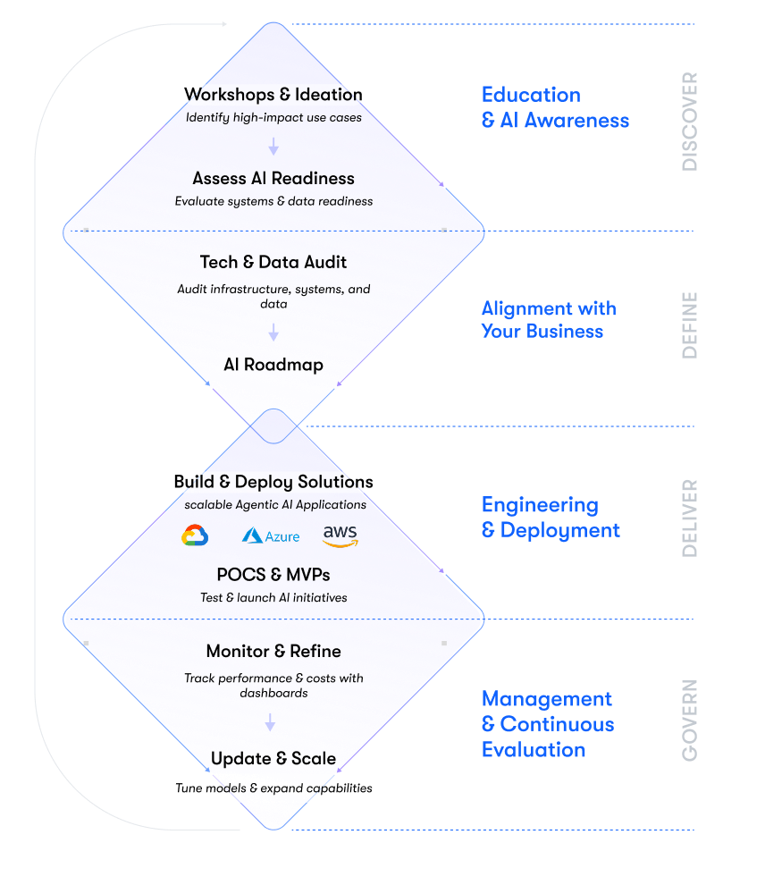
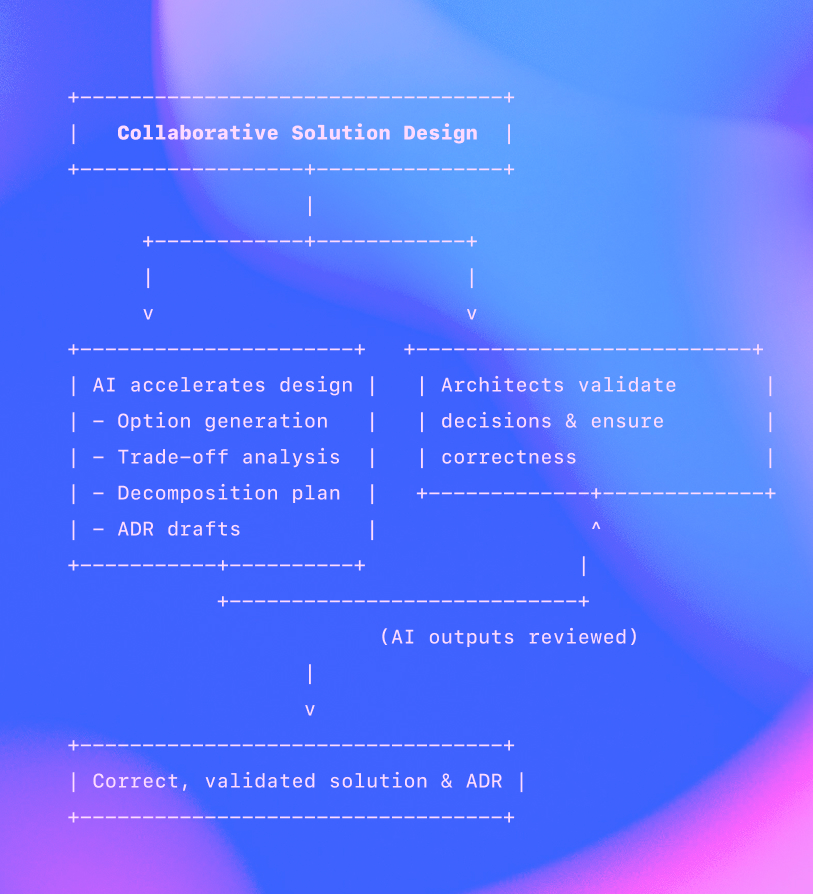
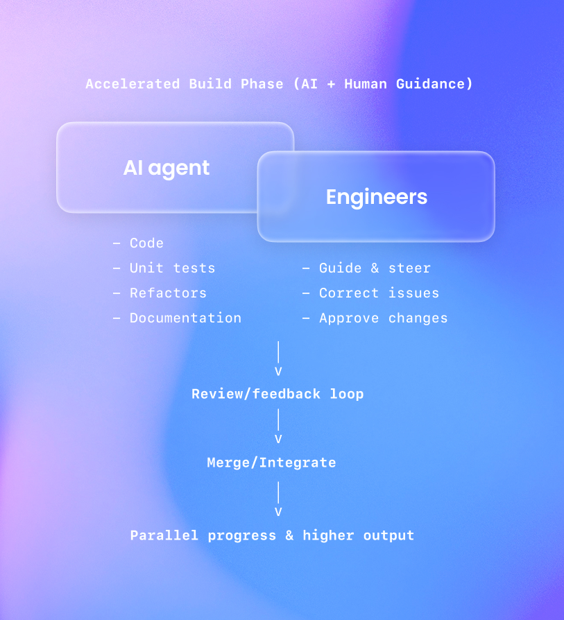
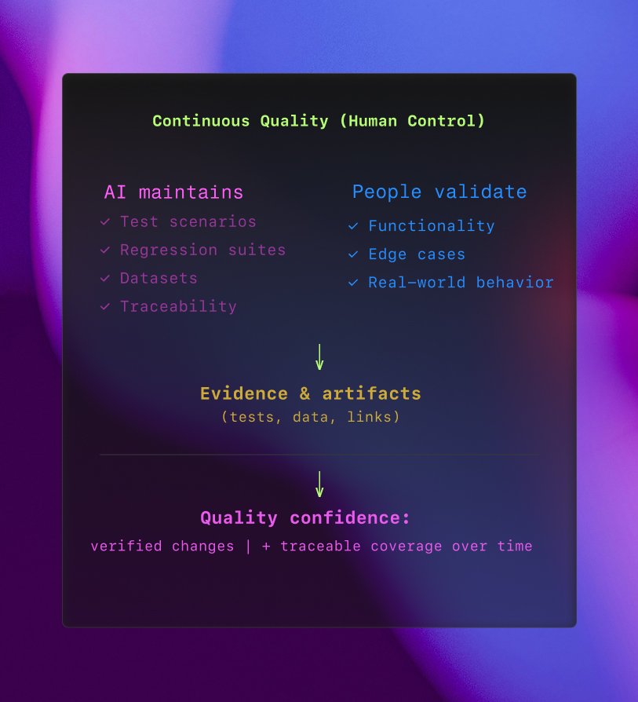
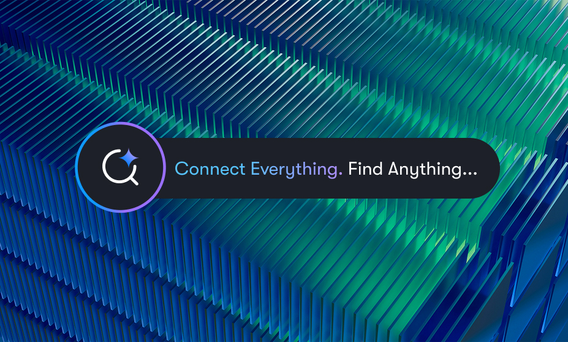
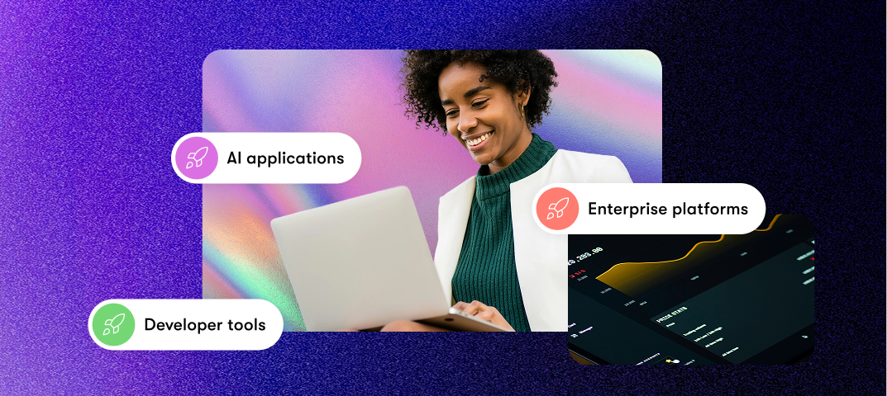
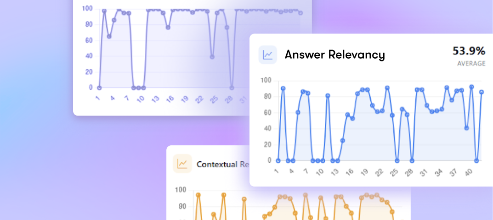
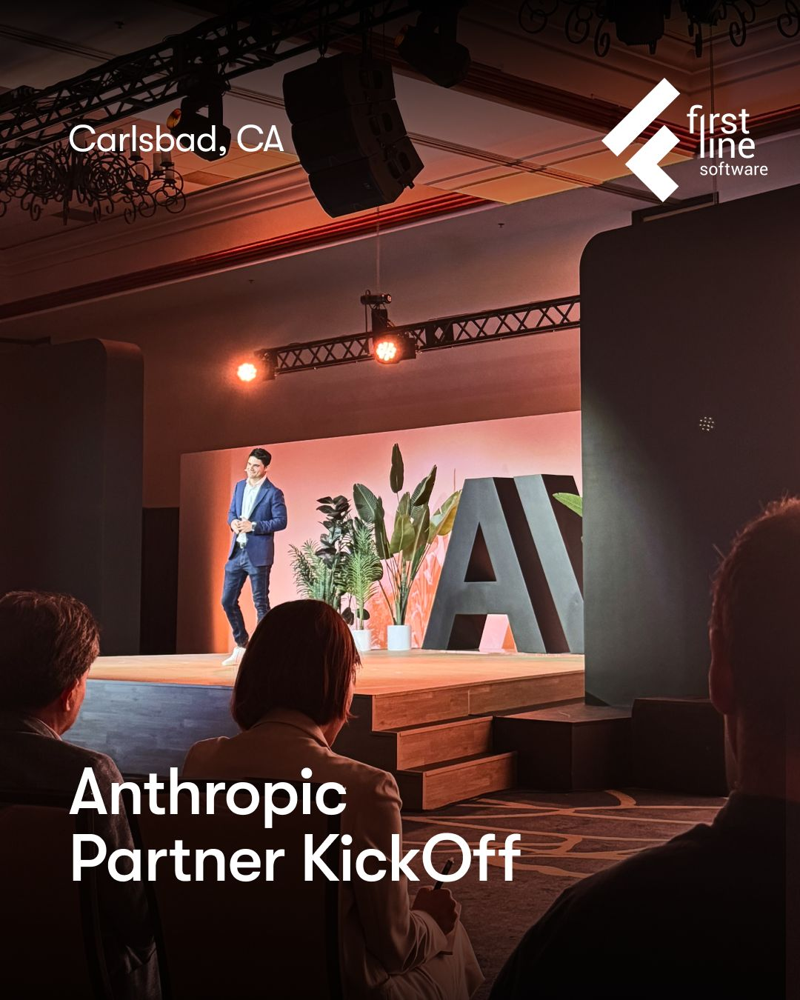

AI-Native Engineering Company
Wij bouwen en beheren AI-native systemen van begin tot eind. Veel teams blijven steken bij pilots of leveren AI die kostbaar en onbetrouwbaar is in productie. Wij valideren waarde vroeg en ontwikkelen systemen die veilig, voorspelbaar en onderhoudbaar blijven op schaal.
Drie groeimodi
Vind het juiste AI-Native plan voor u
Race-modus
Intent-gestuurde AI-Native validatie
Van idee naar systeem — in dagen
Wat u krijgt:
≈10x snelheid
• Versnelde productontwikkeling
• Productieklare oplossing
Geschikt voor
- Probleemoplossende sprints
- Innovatie-initiatieven
- Nieuwe productrichtingen
Bedrijfswaarde
- Ervaar bedrijfswaarde in dagen
- Voorsprong op concurrenten
- Vermijd grootschalig investeringsrisico
- Snelle afstemming met stakeholders
Tijd tot waarde
- dagen
Leveringsteam:
Principal Engineer + Agent Taskforce
AI-Accelerated Engineering
AI-Native Engineering op schaal
Van prototype naar enterprise-productie — in weken
Wat u krijgt:
≈3x snelheid
Meer output met AI-native teams
Geschikt voor
- Producten ontwikkelen
- Kernplatformen
- Engineering teams opschalen
Bedrijfswaarde
- Betrouwbaar leveren met aanzienlijk hogere snelheid
- Opschalen zonder technische schuld op te bouwen
- Lagere kosten per geleverde functionaliteit
Tijd tot waarde
- Weken tot maanden
Leveringsteam:
AI-Native Engineering Squads
Beheerde AI-diensten
AI-Native operaties
Van gesegmenteerde systemen naar door AI beheerde workflows
Wat u krijgt:
AI-native bedrijfsresultaten
Slimme systemen voor kernprocessen
Geschikt voor
- Bedrijfskritische systemen
- AI-first transformatie
Bedrijfswaarde
- Verlaag operationele kosten en handmatige inspanning
- Integreer AI in kernprocessen van het bedrijf
- Behaal meetbare, KPI-gedreven impact
Tijd tot waarde
- Doorlopend, impactgericht
Leveringsteam:
Principal Engineer + Agent Taskforce
Herontwikkeling
AI-Native herstelmotor
Van legacy naar modern fundament—zonder controleverlies
Geschikt voor
- Systemen met dode code of leveranciersafwenteling
Wat u krijgt
Een levend systeem dat uw team kan bezitten, ontwikkelen en vertrouwen
Bedrijfswaarde
- Herwin eigenaarschap over uw kernsystemen
- Moderniseer zonder operationele verstoring
- Lagere kosten en risico's op de lange termijn
SaaS-uitstap
Vervang de SaaS-workflows die u daadwerkelijk gebruikt door een eigen, productieklaar systeem.
Geschikt voor
- Teams die te veel betalen voor onderbenut enterprise-SaaS
Wat u krijgt
Eigen workflow plus een duidelijke SaaS-uitstap
Bedrijfswaarde
- AI-gestuurde kostenefficiënte levering
- Eigen bedrijfskritische workflows
- Gecontroleerde, selectieve SaaS-uitstap
Wat u wint met beheerde AI-diensten
AI die presteert — veilig, efficiënt en met duidelijke bedrijfswaarde.
Hoe wij AI in elke fase beheren
Opleiding & AI-bewustwording
We beginnen met strategische workshops, snelle ideevorming en vroeg onderzoek om use cases met hoge impact te identificeren en AI-gereedheid te beoordelen.
Afstemming op uw bedrijf
Wij helpen u uw AI-ideeën uit te voeren door uw technologische basis te auditen — infrastructuur, systemen en data — om ervoor te zorgen dat deze klaar is voor schaalbare adoptie. Via AI-roadmapping en strategische investeringsbegeleiding stemmen wij uw AI-initiatieven af op bedrijfsprioriteiten en maximaliseren we het rendement op investering.
Engineering & implementatie
We deliver scalable Agentic AI Applications tailored to your business and tech environment. Whether built from scratch or powered by accelerators, our solutions are designed for real-world use.
Wij bieden snelle PoC's, MVP-ontwikkeling en volledige uitrollingen. Alle applicaties kunnen native worden geïmplementeerd op GCP, Azure of AWS voor naadloze integratie en prestaties op schaal.
Beheer & continue evaluatie
We actively manage and refine Agentic AI Applications so they remain aligned with business goals and user expectations.
AI behavior stays under our control through customizable dashboards, where we track execution success, hallucinations, relevance, and cost in real time.
Via Agentisch AI-beheer stemmen wij continu prompts af, updaten modellen en breiden capaciteiten uit, zodat uw systemen evolueren met uw strategie.

Casestudie
50% reductie in integratieleveringstijd
Via een universeel API-platform voor een vastgoedtechnologiebedrijf.
Werk samen met de beste platformen en tools
Hoe AI-versnelde engineering werkt
Wij herbouwden de SDLC: AI-agents werken mét engineers, niet naast of in plaats van hen.
Door mensen geleide ontdekking
Ontdekking en probleemstelling blijven door mensen gedreven.
AI structureert notities, clustert inzichten en stelt acceptatiecriteria op.
Collaboratief oplossingsontwerp
Architecten valideren beslissingen en zorgen voor juistheid.
AI versnelt het ontwerp via optiegeneratie, afwegingsanalyse, decompositieplanning en ADR-concepten.
Versnelde bouwfase (AI + menselijke begeleiding)
AI-agents genereren code, unit tests, refactors en documentatie.
Engineers begeleiden, corrigeren en keuren goed, wat parallelle voortgang en hogere doorvoer mogelijk maakt.
Continue kwaliteit met menselijke controle
AI beheert testscenario's, regressieseries en traceerbaarheid.
Mensen valideren functionaliteit en randgevallen.
Beheerde DevOps-automatisering
AI bereidt IaC-diffs, provisioningscripts en releasenotities voor.
Mensen handhaven goedkeuringen, beleid en kwaliteitspoorten voor veilige, voorspelbare releases.



Casestudie
AI-gestuurde vastgoedinspecties voor snellere vastgoedbeslissingen
Inspectierapportage automatiseren met AI om vastgoedbeoordelingen te versnellen en nauwkeurigheid te verbeteren.

Wat onze klanten over ons zeggen
“First Line Software let goed op en beheert het project proactief samen met ons, terwijl ze extra dingen doen die ver boven onze verwachtingen uitstijgen. De proof of concepts die First Line Software tijdens de ontdekkingsfase leverde, waren het perfecte voorbeeld van hun proactieve aanpak.
Terwijl het andere bedrijf alleen zei dat ze ons project konden voltooien, nam First Line Software de tijd om ons daadwerkelijk te laten zien hoe de software eruit zou zien, waardoor het werk naar een hoger niveau werd getild.”
Directeur
Vastgoedbedrijf
Ontdek onze expertise
AI-tools die beheerde AI aandrijven
Herbruikbare, enterprise-klare tools die elke fase van uw beheerde AI-traject versnellen — van idee tot vertrouwde, productiewaardige oplossingen.

AI-zoektool
Enterprise AI-zoeken zonder controle te verliezen
Veilig AI-zoeken door documenten,
systemen en API's — nauwkeurig, met toegangsbeheer en traceerbaarheid.

Promptbeheertool
Prompts als infrastructuur
Versioned, gevalideerde en gedeelde prompts voor voorspelbaar
AI-gedrag op schaal.

Evaluatie- & observatietool
Weet hoe uw AI presteert in productie
Continue bewaking van kwaliteit, betrouwbaarheid
en kosten over tijd.
0+
Jaar technologische ervaring
Een wereldwijd engineeringbedrijf dat software bouwt met AI-versterkte levering.
0+
Op maat gemaakte softwareprojecten geleverd
Wij bouwen uiteenlopende applicaties voor allerlei bedrijfsdoelen.
0%
Klantbehoudpercentage
Wij richten ons op excellentie en houden ons aan hoge standaarden, schone code en gebruikersgerichte oplossingen.

Partnerschappen & evenementen
AI bevorderen via partnerschap met Anthropic
Op Anthropic’s Partner Kickoff spraken wij met brancheleiders
over hoe samenwerking AI-adoptie versnelt.
Samen brengen wij geavanceerde modellen naar de praktijk.